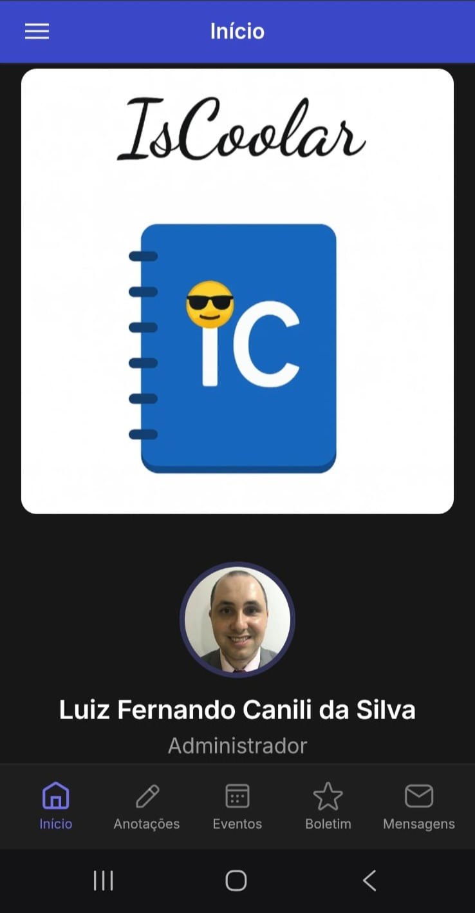
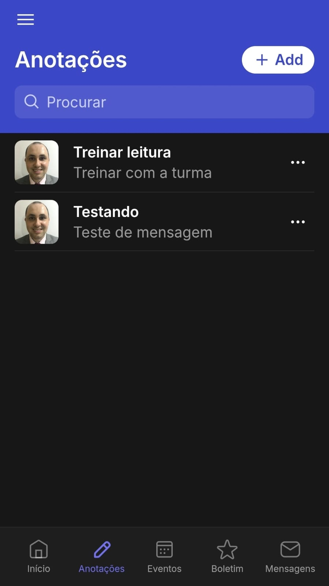
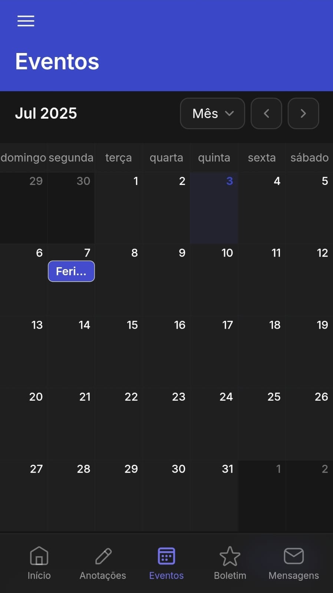
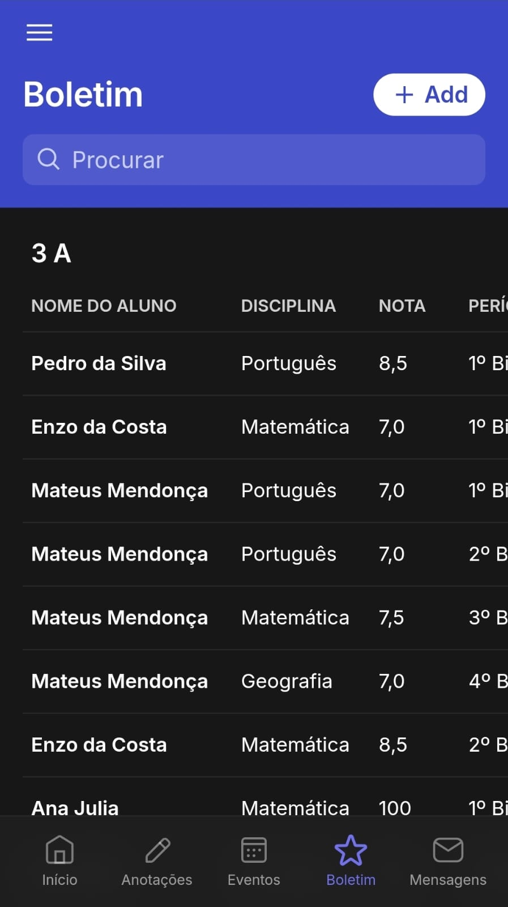
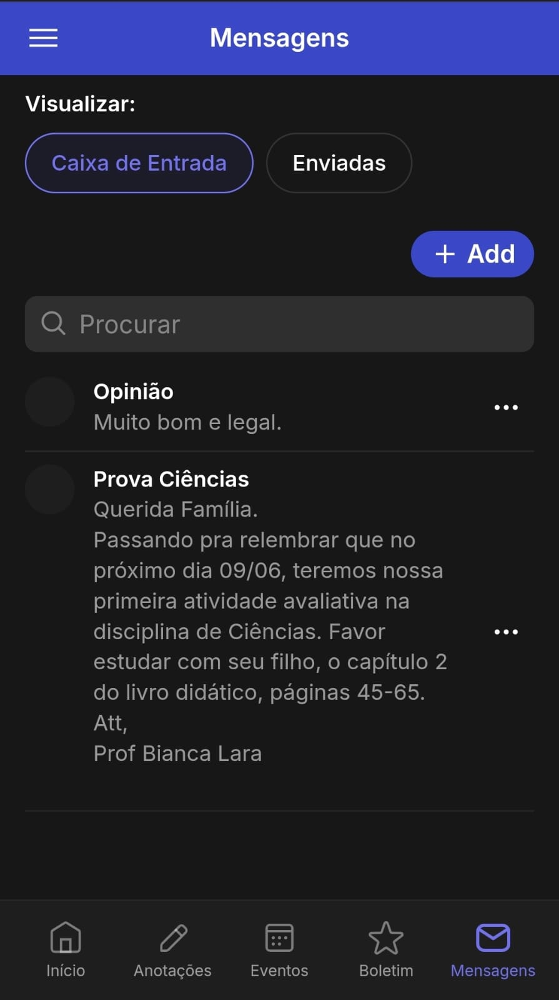

IsCoolar
Esse app eu criei para um trabalho da faculdade, utilizando a plataforma Glide. Trata-se de uma agenda escolar eletrônica, pensada especialmente para ser usada pelo corpo docente de instituições educacionais e pelos responsáveis de alunos dessas instituições. Pode ser utilizada para fazer anotações, enviar e receber mensagens, exibir eventos da instituição e boletins virtuais. É prático, pois pode substituir 100% o papel.
Galeria de Imagens




